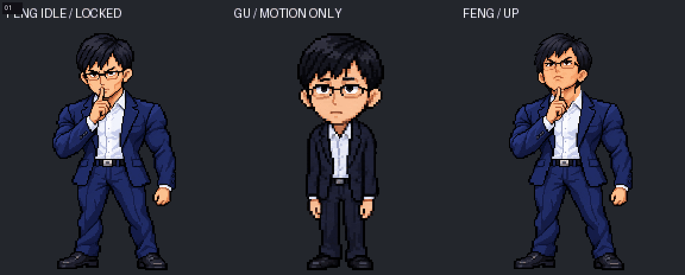
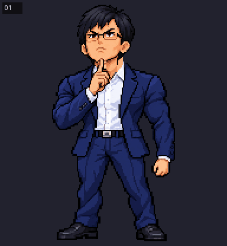
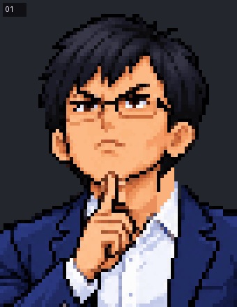
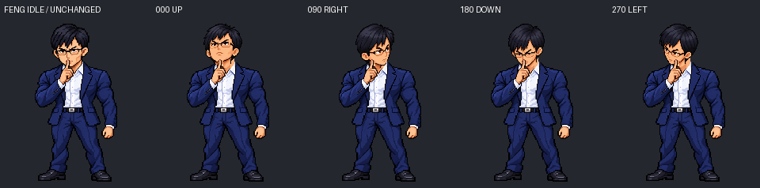

2026-10-21 复审：用户再次确认「Feng Look 审核通过」。批准仍限于下方未改动的四方向关键姿势；图片与 GIF 保持原字节，继续冻结。
2026-10-20：用户确认「feng look 审核通过」。四张关键帧已冻结；每一步后续修改须检查后独立 commit。未扩展为 16 方向，未接入 App。审核及 SHA256 记录
Gu 只提供抬头、右转、低头、左转的动作参考，不借用 Gu 的脸和体型。身体、双手、手肘、袖口和西装来自正式 Feng Idle 的原始像素。头部由内置图像编辑生成，以统一的头部 X/Y 最近邻归一化匹配 Idle 尺度，再使用原头部调色板。不是未经修改的原头部像素；人物身份仍须人工审核。
本页只有四张主要方向，不是完成的 16 帧连续动画。先检查外形和转头方式，未生成中间方向，未接入 App。



